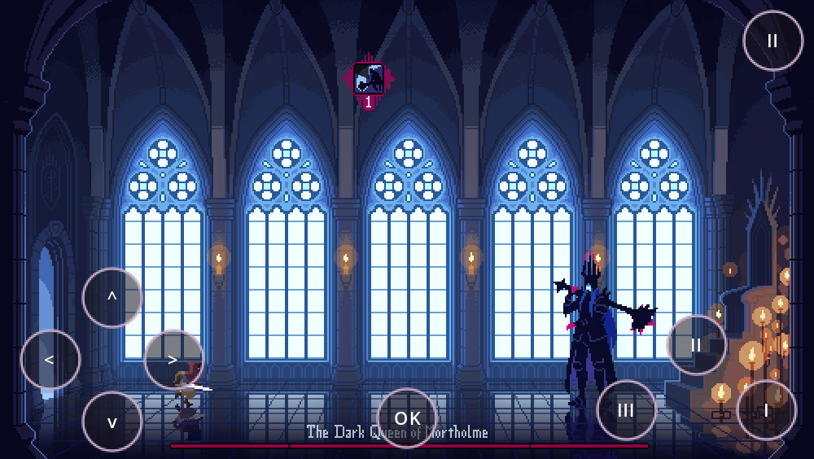

Primeiro teste Android — v0.1. Runtime Godot 4.2.1 ARM64 e recursos originais preservados.
Baixar APK — 93 MBTodos os dados estão incluídos. Não precisa baixar ZIP nem OBB. Aplicativo separado do Celeste.
Setas para movimento/menus; I ataque, II investida, III magia conforme desbloqueio; OK confirma diálogos; botão superior direito pausa.
Menu, diálogo inicial, movimento, ataque e pausa foram exercitados em Linux/Mesa. Ainda exige teste no Android. O EXE enviado referencia 12 texturas ausentes; campanha completa, áudio no telefone e compatibilidade 16 KB seguem pendentes.
